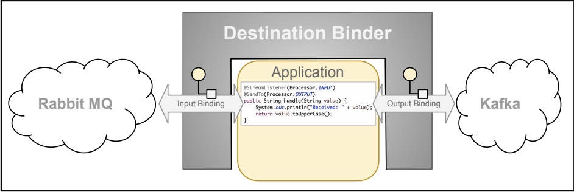

---
# The name of your project
title: Spring Cloud Stream
badges:
# Specify your project's twitter handle, if any. Delete if none.
twitter: SpringCloudOSS
# Customize your project's badges. Delete any entries that do not apply.
custom:
- name: Source (GitHub)
url: https://github.com/spring-cloud/spring-cloud-stream
icon: github
- name: Issues (Waffle)
url: https://waffle.io/spring-cloud/spring-cloud-stream
icon: tracking
- name: CI (Jenkins)
url: https://jenkins.spring.io/view/SpringCloudStream/view/CI/
icon: ci
- name: StackOverflow
url: http://stackoverflow.com/questions/tagged/spring-cloud-stream
icon: stackoverflow
---
{% capture parent_link %}
[Spring Cloud]({{ site.projects_site_url }}/spring-cloud)
{% endcapture %}
{% capture billboard_description %}
Spring Cloud Stream is a framework for building highly scalable event-driven microservices connected with shared messaging systems.
The framework provides flexible programming model built on already established and familiar Spring idioms and best practices, including support
for persistent pub/sub semantics, consumer groups, and stateful partitions.
{% endcapture %}
{% capture main_content %}
The core building blocks of Spring Cloud Stream are:
* *Destination Binders*: Components responsible to provide integration with the external messaging systems.
* *Destination Bindings*: Bridge between the external messaging systems and application provided Producers and Consumers of messages (created by the Destination Binders).
* *Message*: The canonical data structure used by producers and consumers to communicate with Destination Binders (and thus other applications via external messaging systems).

Currently Spring Cloud Stream supports [RabbitMQ](https://github.com/spring-cloud/spring-cloud-stream-binder-rabbit) and [Apache Kafka](https://github.com/spring-cloud/spring-cloud-stream-binder-kafka) binders with more binder implementations in the pipeline _(such as: [Google PubSub](https://github.com/spring-cloud/spring-cloud-gcp/tree/master/spring-cloud-gcp-pubsub-stream-binder) and [AWS Kinesis](https://github.com/spring-cloud/spring-cloud-stream-binder-aws-kinesis))_.
## Quick Start
{% include download_widget.md %}
As long as Spring Cloud Stream and a Spring Cloud Stream Binder dependencies are on the classpath any Spring Boot application with `@EnableBinding` binds to the external
messaging system (e.g. [Rabbit MQ](https://github.com/spring-cloud/spring-cloud-stream-binder-rabbit) or [Apache Kafka](https://github.com/spring-cloud/spring-cloud-stream-binder-kafka),
depending on the binder-implementation of choice).
For more comprehansive step-by-step _getting started_ experience please refer to the
[Quick Start](https://docs.spring.io/spring-cloud-stream/docs/Elmhurst.RELEASE/reference/htmlsingle/#_quick_start) section of the user guide.
Below is the fully functional Spring Cloud Stream application, which receives and logs data to the console.
```java
@SpringBootApplication
@EnableBinding(Sink.class)
public class LoggingConsumerApplication {
public static void main(String[] args) {
SpringApplication.run(LoggingConsumerApplication.class, args);
}
@StreamListener(Sink.INPUT)
public void handle(Person person) {
System.out.println("Received: " + person);
}
public static class Person {
private String name;
public String getName() {
return name;
}
public void setName(String name) {
this.name = name;
}
public String toString() {
return this.name;
}
}
}
```
As you can see from the preceding example:
* We've enabled `Sink` binding (input-no-output) by using `@EnableBinding(Sink.class)`. Doing so signals to the framework to initiate binding to the messaging system,
where it automatically creates the destination (that is, queue, topic, and others) that are bound to the `Sink.INPUT` channel.
* We've added a handler method to receive incoming messages of type `Person`. Doing so lets you see one of the core features of the framework: It tries to automatically convert incoming message
payloads to type `Person`.
You can start the application by simply running its `main(..)` method.
### Apache Kafka Client Compatibility
Spring Cloud Stream supports a variety of Apache Kafka Client releases. To learn more about it, please refer to the [Apache Kafka Client Compatibility](https://github.com/spring-cloud/spring-cloud-stream/wiki/Kafka-Client-Compatibility) section in the Wiki page.
{% endcapture %}
{% capture related_resources %}
### Sample Projects
* [Spring Cloud Stream Samples](https://github.com/spring-cloud/spring-cloud-stream-samples)
### Related Projects
* [Spring Cloud Stream Applications](http://cloud.spring.io/spring-cloud-stream-app-starters/)
* [Spring Cloud Data Flow](http://cloud.spring.io/spring-cloud-dataflow/)
{% endcapture %}
{% include project_page.html %}